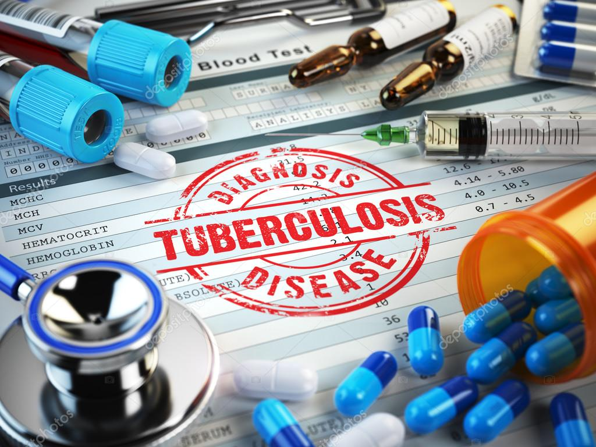
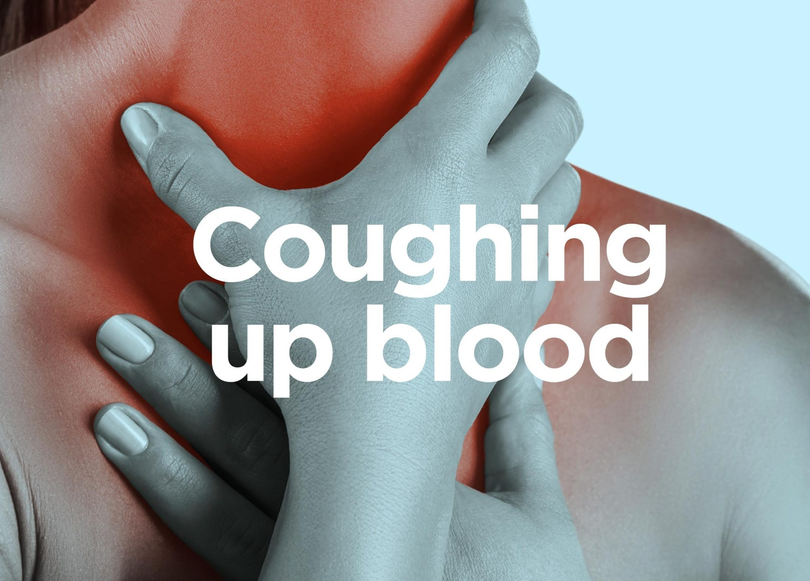
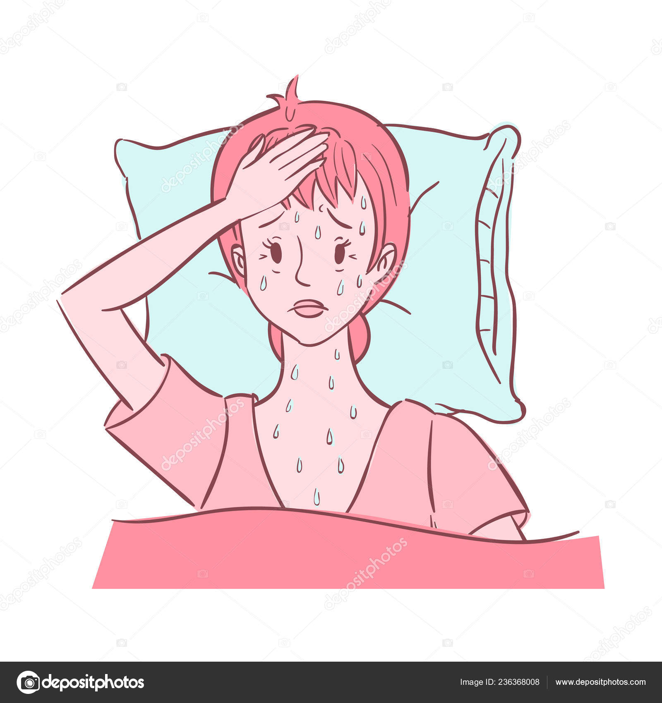
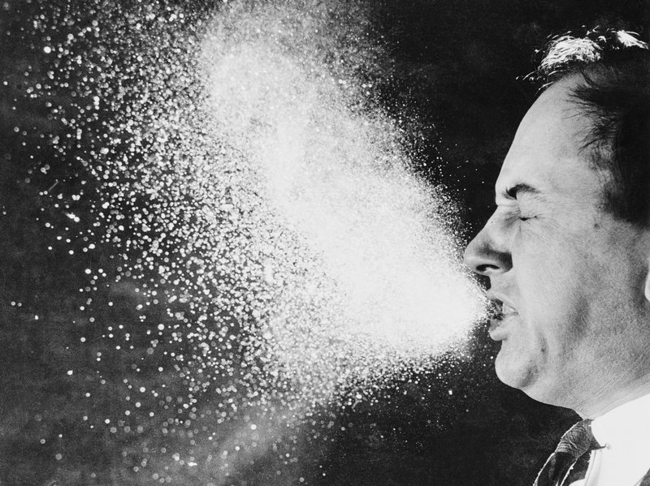
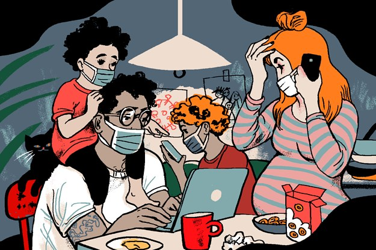
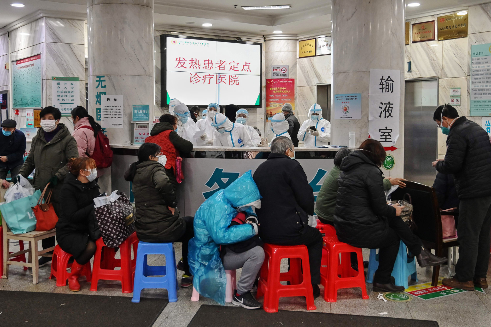
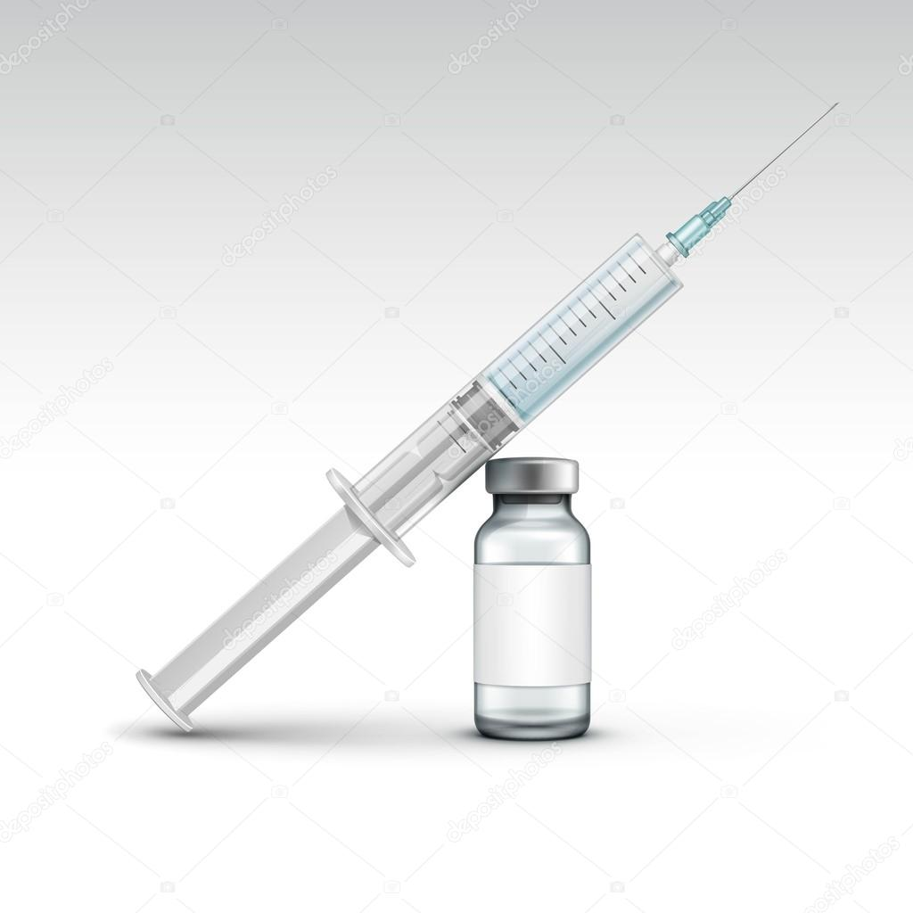

Tuberculosis (TB)

Tuberculosis (TB) is caused by bacteria (Mycobacterium tuberculosis) that most often affect the lungs. Tuberculosis is curable and preventable.TB is spread from person to person through the air. When people with lung TB cough, sneeze or spit, they propel the TB germs into the air. A person needs to inhale only a few of these germs to become infected.
About one-quarter of the world's population has latent TB, which means people have been infected by TB bacteria but are not (yet) ill with the sease and cannot transmit the disease.
People infected with TB bacteria have a 5–15% lifetime risk of falling ill with TB. Persons with compromised immune systems, such as people living with HIV, malnutrition or diabetes, or people who use tobacco, have a higher risk of falling ill.
When a person develops active TB disease, the symptoms (such as cough, fever, night sweats, or weight loss) may be mild for many months. This can lead to delays in seeking care, and results in transmission of the bacteria to others. People with active TB can infect 5–15 other people through close contact over the course of a year.
Without proper treatment, 45% of HIV-negative people with TB on average and nearly all HIV-positive people with TB will die.
Symptoms of Tuberculosis:
The most common symptom of Tuberculosis is lasting for more than 3 weeks. Other symptoms include -
Fatigue
Fatigue can cause a vast range of other physical, mental and emotional symptoms including: chronic tiredness or sleepiness, headache, dizziness.
Fatigue is a term used to describe an overall feeling of tiredness or lack of energy. It isn’t the same as simply feeling drowsy or sleepy. When you’re fatigued, you have no motivation and no energy. It isn’t the same as simply feeling drowsy or sleepy. When you’re fatigued, you have no motivation and no energy.
Coughing up blood

Coughing up blood can be alarming, but isn't usually a sign of a serious problem if you're young and otherwise healthy. It's more a cause for concern in older people, particularly those who smoke.
The medical term for coughing up blood is haemoptysis.
You may cough up small amounts of bright red blood, or frothy blood-streaked sputum (phlegm). The blood is usually from your lungs and is often the result of prolonged coughing or a chest infection.Hemoptysis is when you cough up blood. It can be a sign of a serious medical condition. Infections, cancer, and problems in blood vessels in your lungs can cause it. Unless you have bronchitis, you need to see a doctor if you’re coughing up blood.
Fever
In response to an infection, illness, or some other cause, the hypothalamus may reset the body to a higher temperature. Although the most common causes of fever are common infections such as colds and gastroenteritis, other causes include: Infections of the ear, lung, skin, throat, bladder, or kidney.A fever is a body temperature that is higher than normal. A normal temperature can vary from person to person, but it is usually around 98.6 F. A fever is not a disease. It is usually a sign that your body is trying to fight an illness or infection. Infections cause most fevers.
Chills
Chills are feelings of coldness accompanied by shivering. They may arise with or without fever. Without fever, chills typically arise after exposure to a cold environment. Essentially any condition that may produce fever (including infections and cancers) can result in chills along with fever. Fever and chills are common symptoms of influenza infection (the flu). Exposure to a cold environment can result in chills. With prolonged or constant exposure to cold, serious injuries related to hypothermia (a lowered core body temperature) can result.
Night sweats

Doctors often hear their patients complain of night sweats. Night sweats refer to excess sweating during the night. But if your bedroom is unusually hot or you are wearing too many bedclothes, you may sweat during sleep, and this is normal. True night sweats are severe hot flashes occurring at night that can drench your clothes and sheets and that are not related to an overheated environment.
Causes of Tuberculosis
Tuberculosis can be caused because of:
Weakened immune system

Your immune system can also be weakened by smoking, alcohol, and poor nutrition. AIDS. HIV, which causes AIDS, is an acquired viral infection that destroys important white blood cells and weakens the immune system. People with HIV/AIDS can become seriously ill with infections that most people can fight off.White blood cells, antibodies, and other components, including organs and lymph nodes, make up the body’s immune system. Many disorders can weaken the immune system and cause a person to become immunocompromised. These immunodeficiency disorders, which range from mild to severe, can be present from birth or may occur as a result of environmental factors.
Saliva droplets spreading from person to person when the infected person coughs or sneezes

TB is spread from person to person through the air. When people with lung TB cough, sneeze or spit, they propel the TB germs into the air. A person needs to inhale only a few of these germs to become infected.Tuberculosis is caused by bacteria that spread from person to person through microscopic droplets released into the air. This can happen when someone with the untreated, active form of tuberculosis coughs, speaks, sneezes, spits, laughs or sings.Droplet transmission occurs when a person is in in close contact (within 1 m) with someone who has respiratory symptoms (e.g., coughing or sneezing) and is therefore at risk of having his/her mucosae (mouth and nose) or conjunctiva (eyes) exposed to potentially infective respiratory droplets.
Friends and family of the infected person

If you or your family members have lung TB which can be spread to others, the close ones like family members, friends or schoolmates are asked to come to the health centre. They are examined to see if any of them has TB or if someone has become infected with TB.
Preventive Measures and Diets for Tuberculosis
Tuberculosis can be prevented by following the given preventive measures:
Avoid close contact with people where infected may be seen for instance hospitals

The amount of time needed for home isolation is different for each person. Your health care provider will let you know how long you need to stay at home. Tests of your sputum will help your health care provider know when your home isolation can stop. If you take your medication, your TB will get better. Once tests show you are no longer contagious, you will be able to do the same things you did before you became sick.Hospital acquired infections (HAIs) is a major safety concern for both health care providers and the patients. Considering morbidity, mortality, increased length of stay and the cost, efforts should be made to make the hospitals as safe as possible by preventing such infections.
Vaccinations if you are infected so that it does not spread

Bacille Calmette-Guérin (BCG) is a vaccine for tuberculosis (TB) disease. This vaccine is not widely used in the United States, but it is often given to infants and small children in other countries where TB is common. BCG does not always protect people from getting TB.
Foods for tuberculosis are banana, peanut, cereal porridge, wheat and ragi, mango, orange, sweet pumpkin carrots, amla, guava, tomato, nuts and seeds, whole grain cereals, seeds, nuts, fish and chicken.